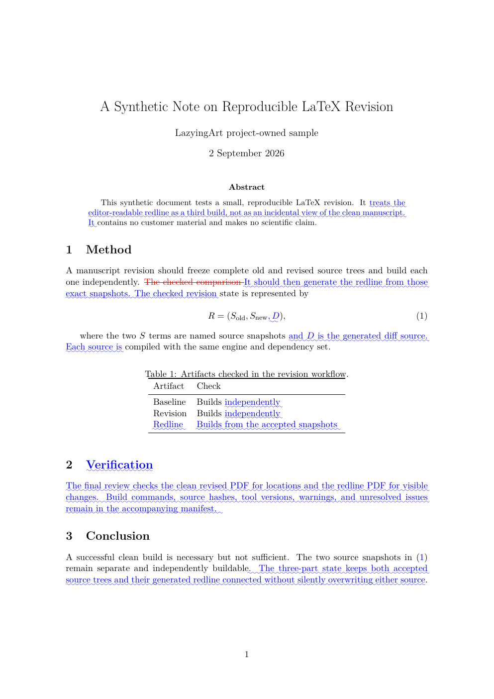

Free fit check · one manuscript · USD 250
One manuscript.
Three clean builds.
Bring one bounded LaTeX paper and its target journal template. The sprint returns a reproducible clean build, an editor-readable redline from your supplied baseline, and a short issue ledger.
No manuscript upload or payment at the fit-check stage. Describe the project first; source transfer starts only after scope and confidentiality terms are accepted.
Up to 7,500 words · one journal template · one supplied baseline and revision.
A reviewable revision package
Build first.
Diff second.
01Freeze the supplied baseline and current revision instead of overwriting either one.
02Compile the current source in a recorded toolchain and trace the first real error.
03Check the requested template, references, figures, tables, cross-references, and visible warnings.
04Generate the redline as a separate third build and deliver the commands, logs, and issue ledger.
The deliverable
A package another researcher can rebuild.
The sprint separates source repair, venue checks, and the editor-facing diff so a change in one place does not quietly alter the others.
Clean build
A working revision source tree and PDF, with the engine, commands, package environment, final log, and unresolved warnings recorded.
Template and issue check
A concise ledger covering build failures, broken references, missing assets, visible layout problems, and the supplied venue checklist.
Reproducible redline
A generated redline.tex and PDF tied to the exact supplied baseline and revision, plus one consolidated pass of up to ten build or formatting corrections.
A deliberately narrow scope
No ghostwriting. No acceptance promises.
This is a build and formatting sprint, not substantive research or a journal-submission service. It does not include literature review, new scientific claims, statistical analysis, citation invention, authorship, peer-review replies, portal access, or guaranteed acceptance.
You provide
The complete LaTeX source, bibliography and figures, a distinct baseline when a redline is needed, the exact template or instructions, word count, deadline, and any editor-visible requirements.
We agree first
Confidentiality, source-transfer method, retention, local-only handling if required, the permitted use of automation, and the exact output list are written before files move.
You retain control
You approve every scientific and editorial change. Portal credentials, submission, correspondence, and the publication decision remain with the authors.
Public process evidence
Inspect the workflow before sharing a manuscript.
The examples are synthetic or project-owned. They prove the build path and working method, not a client result or a journal outcome.

See exactly what comes back
Open the sample delivery, not just a screenshot.
The 492 KB packet contains the baseline and revision sources, three PDFs, generated redline source, final logs, a compact issue ledger, and manifests with a hash for every included file.
Clean buildsBaseline and revisionPassed
Redline buildPinned latexdiff 1.4.0Passed
Open build blockersThis one-page sample0
This is project-owned workflow evidence, not customer work, scientific review, journal compliance, or a publication result.
Three-build proof
Synthetic redline sample
Old source, revised source, three PDFs, generated redline, final logs, pinned latexdiff, an issue ledger, and hash manifests.
Repair guide
When both versions build but the diff fails
A practical guide to freezing source trees, flattening multi-file papers, and fixing the first real generated error.
Read the guide →Revision discipline
Plan-gated paper workflow
A public workflow for baselines, response locations, build checks, PDF review, and explicit unresolved issues.
Inspect the workflow →Working terms
Clear boundaries before files move.
These terms keep the founding USD 250 sprint small enough to deliver carefully. The accepted written scope controls the work for a particular manuscript.
Timing
Delivery is ten business days after the scope is accepted, payment is confirmed, the complete agreed source is received, and the target template is accessible. Only one manuscript sprint is active at a time.
Correction pass
Send one consolidated list of up to ten build or formatting corrections within seven calendar days after delivery. New text, scientific edits, a different template, or additional output is a new scope.
Cancellation and refund
Cancel before source transfer or processing begins for a full refund. After work starts, only completed and delivered items are retained: USD 100 for the clean build, USD 75 for the template and issue ledger, and USD 75 for the redline and correction pass. The undelivered balance is refunded.
Source handling and support
Working source copies are deleted within fourteen calendar days after delivery, cancellation, or refund unless the written scope requires earlier deletion. Customer material is never reused as public proof without separate permission. Support is limited to written clarification during the seven-day correction window.
Founding manuscript sprint · USD 250
Start with a paper that should already build.
The free fit check asks for the source shape, template, deadline, and handling constraints. If it fits, both sides approve the exact scope and working terms before a Stripe request or private source transfer.